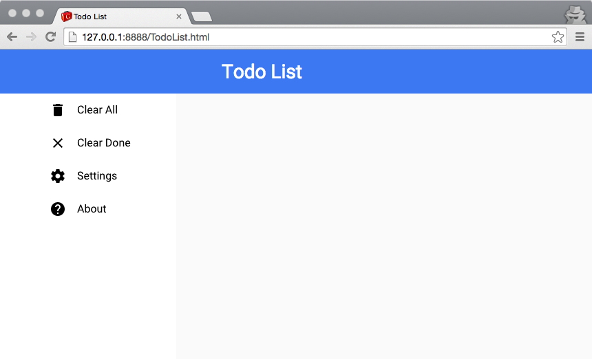

Building the UI
In this chapter we’ll build a modern looking UI for the TodoList application using the Material Design specifications. We’ll be working with the Vaadin gwt-polymer-elements library, a wrapper for the Polymer Paper Elements collection.
Main screen
Create the main screen of the application.
We will create a UiBinder screen composed of a java file (
Main.java) and its visual descriptor (Main.ui.xml).You can generate these files either by copying the following snippets, or by using the Eclipse GWT plugin.
Main.java
package org.gwtproject.tutorial.client; import com.google.gwt.core.client.GWT; import com.google.gwt.uibinder.client.UiBinder; import com.google.gwt.user.client.ui.Composite; import com.google.gwt.user.client.ui.HTMLPanel; public class Main extends Composite { interface MainUiBinder extends UiBinder<HTMLPanel, Main> { } private static MainUiBinder ourUiBinder = GWT.create(MainUiBinder.class); public Main() { initWidget(ourUiBinder.createAndBindUi(this)); } }Main.ui.xml
<ui:UiBinder xmlns:ui='urn:ui:com.google.gwt.uibinder' xmlns:g='urn:import:com.google.gwt.user.client.ui'> <g:HTMLPanel> </g:HTMLPanel> </ui:UiBinder>Add menu items.
Now we can update the
Main.ui.xmlfile by adding menu items.<ui:UiBinder xmlns:ui='urn:ui:com.google.gwt.uibinder' xmlns:g='urn:import:com.google.gwt.user.client.ui'> <g:HTMLPanel> <paper-icon-item ui:field="menuClearAll"> <iron-icon icon="delete"/> <div>Clear All</div> </paper-icon-item> <paper-icon-item ui:field="menuClearDone"> <iron-icon icon="clear"/> <div>Clear Done</div> </paper-icon-item> <paper-icon-item ui:field="menuSettings"> <iron-icon icon="settings"/> <div>Settings</div> </paper-icon-item> <paper-icon-item ui:field="menuAbout"> <iron-icon icon="help"/> <div>About</div> </paper-icon-item> </g:HTMLPanel> </ui:UiBinder>Note: Visit the original polymer elements documentation to learn and demo each component.
Update the entry point to use our new screen.
package org.gwtproject.tutorial.client; import com.google.gwt.core.client.EntryPoint; import com.google.gwt.user.client.ui.RootPanel; import com.vaadin.polymer.Polymer; import com.vaadin.polymer.elemental.Function; public class TodoList implements EntryPoint { public void onModuleLoad() { // We have to load icon sets before run application Polymer.importHref(Arrays.asList( PaperIconItemElement.SRC, IronIconElement.SRC), new Function() { public Object call(Object arg) { // The app is executed when all imports succeed. startApplication(); return null; } }); } private void startApplication() { RootPanel.get().add(new Main()); } }_Tip: to facilitate the usage of webcomponents gwt-polymer-elements maintains a couple of static constants:
Element.TAGandElement.SRC, to avoid memorizing tag names and import paths respectively.Run the application.
Reload the page in your browser, and you should see the four menu items. You’ll probably notice that icons are missing. We’ll fix that in the next step.

Icons and effects
Import icon collections.
Polymer comes with several icon collections. Before a collection can be used, it has to be imported. In this example we’ll be using the Iron set. In the code below, we use the
Polymer.importHrefutility method, and wait for the set to load before we run the application.package org.gwtproject.tutorial.client; import com.google.gwt.core.client.EntryPoint; import com.google.gwt.user.client.ui.RootPanel; import com.vaadin.polymer.Polymer; import com.vaadin.polymer.elemental.Function; public class TodoList implements EntryPoint { public void onModuleLoad() { // We have to load icon sets before run application Polymer.importHref(Arrays.asList( "iron-icons/iron-icons.html", PaperIconItemElement.SRC, IronIconElement.SRC), new Function() { public Object call(Object arg) { // The app is executed when all imports succeed. startApplication(); return null; } }); } private void startApplication() { RootPanel.get().add(new Main()); } }Reload the application
You should see all icons in the browser now.

Add a Ripple effect
Feedback when interacting with UI elements is generally considered a positive. If you want, you can read more about Material Design’s philosophy regarding responsive interaction.
- Add
<paper-ripple/>to each item in theMain.ui.xmlfile. - We need to add a few CSS style properties to the items, so that the ripple effect is constrained within the item area.
<ui:UiBinder xmlns:ui='urn:ui:com.google.gwt.uibinder' xmlns:g='urn:import:com.google.gwt.user.client.ui'> <g:HTMLPanel> <style> paper-icon-item { position: relative; overflow: hidden; } </style> <paper-icon-item ui:field="menuClearAll"> <iron-icon icon="delete"/> <div>Clear All</div> <paper-ripple/> </paper-icon-item> <paper-icon-item ui:field="menuClearDone"> <iron-icon icon="clear"/> <div>Clear Done</div> <paper-ripple/> </paper-icon-item> <paper-icon-item ui:field="menuSettings"> <iron-icon icon="settings"/> <div>Settings</div> <paper-ripple/> </paper-icon-item> <paper-icon-item ui:field="menuAbout"> <iron-icon icon="help"/> <div>About</div> <paper-ripple/> </paper-icon-item> </g:HTMLPanel> </ui:UiBinder>- Add
Reload the application to see the ripple effect in action.
Compare click reactions before and after adding
PaperRippleeffects.
Responsive Layout
Layout the application with a Paper Draw Panel.
The Paper elements collection includes a responsive drawer panel. It’s a layout component that can be used in modern applications to make sure they behave nicely on both desktop and mobile devices. For more information, check out the paper-drawer-panel demo.
<ui:UiBinder xmlns:ui='urn:ui:com.google.gwt.uibinder' xmlns:g='urn:import:com.google.gwt.user.client.ui'> <g:HTMLPanel> <style> paper-icon-item { position: relative; overflow: hidden; } </style> <paper-drawer-panel ui:field="drawerPanel"> <div drawer=""> <paper-header-panel mode="seamed"> <paper-toolbar/> <paper-icon-item ui:field="menuClearAll"> <iron-icon icon="delete"/> <div>Clear All</div> <paper-ripple/> </paper-icon-item> <paper-icon-item ui:field="menuClearDone"> <iron-icon icon="clear"/> <div>Clear Done</div> <paper-ripple/> </paper-icon-item> <paper-icon-item ui:field="menuSettings"> <iron-icon icon="settings"/> <div>Settings</div> <paper-ripple/> </paper-icon-item> <paper-icon-item ui:field="menuAbout"> <iron-icon icon="help"/> <div>About</div> <paper-ripple/> </paper-icon-item> </paper-header-panel> </div> <div main=""> <paper-header-panel mode="seamed"> <paper-toolbar> <paper-icon-button ui:field="menu" icon="more-vert" paper-drawer-toggle=""/> <span>Todo List</span> </paper-toolbar> </paper-header-panel> </div> </paper-drawer-panel> </g:HTMLPanel> </ui:UiBinder>Add the content panel
- Add a container for our todo items.
<g:HTMLPanel> ... <div main=""> <paper-header-panel mode="seamed"> <paper-toolbar> <paper-icon-button ui:field="menu" icon="more-vert" paper-drawer-toggle=""/> <span>Todo List</span> </paper-toolbar> <div ui:field="content" class="content vertical center-justified layout"/> </paper-header-panel> </div> ... </g:HTMLPanel>Reload the application
The application should now sport a modern look and be responsive. If you resize the browser window so that its width is below 640px the drawer panel should hide the menu.

Styling the App
Web Components use Shadow DOM styling rules for providing scoped styling of the element. Additionally Polymer provides Shady DOM to deal with browsers not implementing native shadow. Hence Polymer monitors and parses each <style> block rewriting rules on the fly.
The GSS processor, and the way how GWT loads css resources asynchronously make impossible to use shadow and polymer selectors and properties inside <ui:style> blocks because first GSS will complain about certain syntaxes and second Polymer will ignore CssResource injected blocks. Thus you have to use normal <style> in your UiBinder file.
We have two options:
- Include your CSS in your hosting page (HTML file).
- Utilize normal
<style>tags in yourUiBinderfiles.
We’ll use the 2nd approach, but be aware that it will include a new <style> element in the DOM tree each time you create a new widget. In our case, we only have one instance of Main.ui.xml in our application, so this is not a problem.
Change color of the toolbar, style the header text and the content panel:
<g:HTMLPanel> <style> .toolbar { background: #4285f4 !important; } .header { font-size: 200%; margin-left: 50px; background: #4285f4 !important; } .content { padding: 15px; } ... </style> ... <div main=""> <paper-header-panel mode="seamed"> <paper-toolbar class="toolbar"> <paper-icon-button ui:field="menu" icon="more-vert" paper-drawer-toggle=""/> <span class="header">Todo List</span> </paper-toolbar> <div ui:field="content" class="content vertical center-justified layout"/> </paper-header-panel> </div> ... </g:HTMLPanel>
Note: the vertical, center-justified and layout classes are provided by Polymer.
Add and stylize the floating action button
Material Design applications use the characteristic floating button for the main action. In the Paper elements collection, this button is called paper-fab.
<g:HTMLPanel> <style is='custom-style'> ... .add { position: absolute; bottom: 20px; right: 20px; --paper-fab-background: var(--paper-red-500); } </style> <div main=""> ... <paper-fab ui:field="addButton" icon="add" title="add" class="add"/> </div> </g:HTMLPanel>
Tip: In order to make Polymer process your style block add the is="custom-style" attribute.
Tip: Take a look at paper-fab documentation for available custom styling properties and mixins.
Summary
Finally your Main.gwt.xml file should look like:
<ui:UiBinder xmlns:ui='urn:ui:com.google.gwt.uibinder'
xmlns:g='urn:import:com.google.gwt.user.client.ui'>
<g:HTMLPanel>
<style is="custom-style">
paper-icon-item {
position: relative;
overflow: hidden;
}
.toolbar {
background: #4285f4 !important;
}
.header {
font-size: 200%;
margin-left: 50px;
}
.content {
padding: 15px;
}
.add {
position: absolute;
bottom: 20px;
right: 20px;
--paper-fab-background: var(--paper-red-500);
}
</style>
<paper-drawer-panel ui:field="drawerPanel">
<div drawer="">
<paper-header-panel mode="seamed">
<paper-toolbar class="toolbar"/>
<paper-icon-item ui:field="menuClearAll">
<iron-icon icon="delete"/>
<div>Clear All</div>
<paper-ripple/>
</paper-icon-item>
<paper-icon-item ui:field="menuClearDone">
<iron-icon icon="clear"/>
<div>Clear Done</div>
<paper-ripple/>
</paper-icon-item>
<paper-icon-item ui:field="menuSettings">
<iron-icon icon="settings"/>
<div>Settings</div>
<paper-ripple/>
</paper-icon-item>
<paper-icon-item ui:field="menuAbout">
<iron-icon icon="help"/>
<div>About</div>
<paper-ripple/>
</paper-icon-item>
</paper-header-panel>
</div>
<div main="">
<paper-header-panel mode="seamed">
<paper-toolbar class="toolbar">
<paper-icon-button ui:field="menu" icon="more-vert" paper-drawer-toggle=""/>
<span class="header">Todo List</span>
</paper-toolbar>
<div ui:field="content" class="content vertical center-justified layout"/>
</paper-header-panel>
<paper-fab ui:field="addButton" icon="add" title="add" class="add"/>
</div>
</paper-drawer-panel>
</g:HTMLPanel>
</ui:UiBinder>
If everything is OK, after reloading your app should look like this:

What’s next
- We have learnt how to use
UiBinderwithElements. - We also know how to add 3rd party Web Components to our UI.
- We understand the mechanism to import polymer elements like icon collections and use special components like effects.
- We can deal with responsive layouts using paper panels and mixing them with conventional html elements in GWT.
- We know how to style elements in UiBinder XML files, using Polymer parsers.